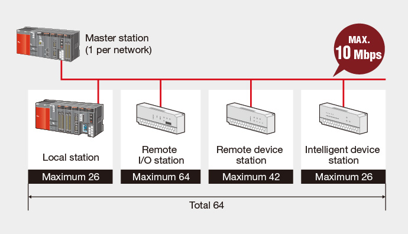

Controllers MELSEC-Q Series
Product features -Network-

CC-Link
Open field network with many compatible devices
CC-Link network module
- By building on reliable field bus technology, CC-Link is capable of moving large volumes of bit data, like ON/OFF relay status, and word data at high-speed.
- CC-Link keeps cyclic transmission consistent and guarantees punctuality by separating it from message (transient) communication. Even if message communication becomes saturated, it will not affect the link scan time.
- The QJ61BT11N module supports CC-Link version 1 and 2, and may be used as a local or master module.

■ Performance Specifications
| Item | Specification | ||
|---|---|---|---|
| Communication speed | Can select from 156 kbps/625 kbps/2.5 Mbps/5 Mbps/10 Mbps | ||
| Transmission path | Bus (RS-485) | ||
| Maximum number of link points per system*1 | Remote inputs/outputs (RX, RY): 8192 points Remote registers (RWw): 2048 points Remote registers (RWr): 2048 points |
||
| Maximum number of link points per system |
Expanded cyclic setting | Single | Remote inputs/outputs (RX, RY): 32 points (30 points for local station) Remote registers (RWw): 4 points Remote registers (RWr): 4 points |
| Double | Remote inputs/outputs (RX, RY): 32 points (30 points for local station) Remote registers (RWw): 8 points Remote registers (RWr): 8 points |
||
| Quadruple | Remote inputs/outputs (RX, RY): 64 points (62 points for local station) Remote registers (RWw): 16 points Remote registers (RWr): 16 points |
||
| Octuple | Remote inputs/outputs (RX, RY): 128 points (126 points for local station) Remote registers (RWw): 32 points Remote registers (RWr): 32 points |
||
| Maximum number of connected stations (master station) | 64*2 | ||
| Total distance/speed (When using Ver. 1.10) | 1200 m/156 kbps, 900 m/625 kbps, 400 m/2.5 Mbps, 160 m/5 Mbps, 100 m/10 Mbps (Using repeaters, it is possible to extend the network distance up to 13.2 km) |
||
- *1.For CC-Link version 2.
- *2.Using only remote I/O stations.